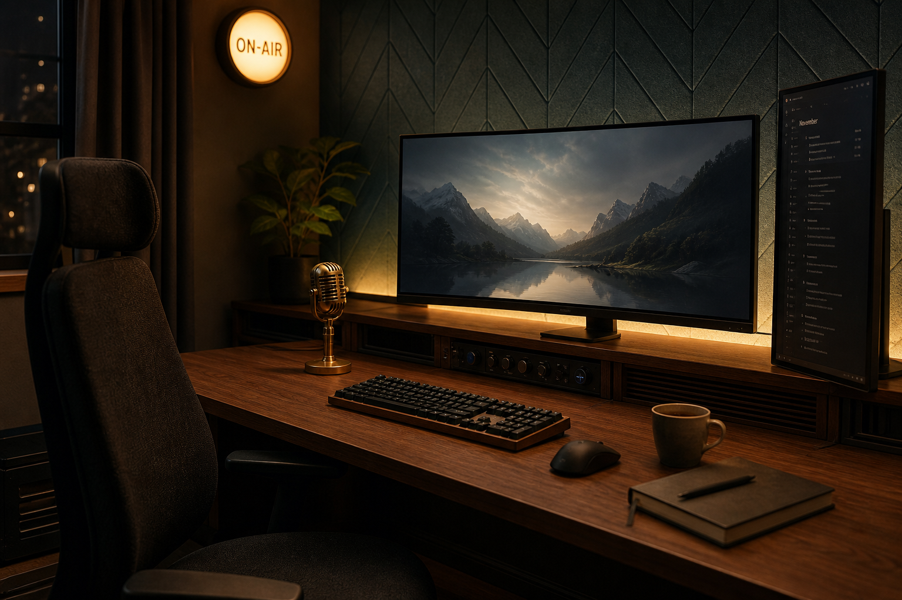
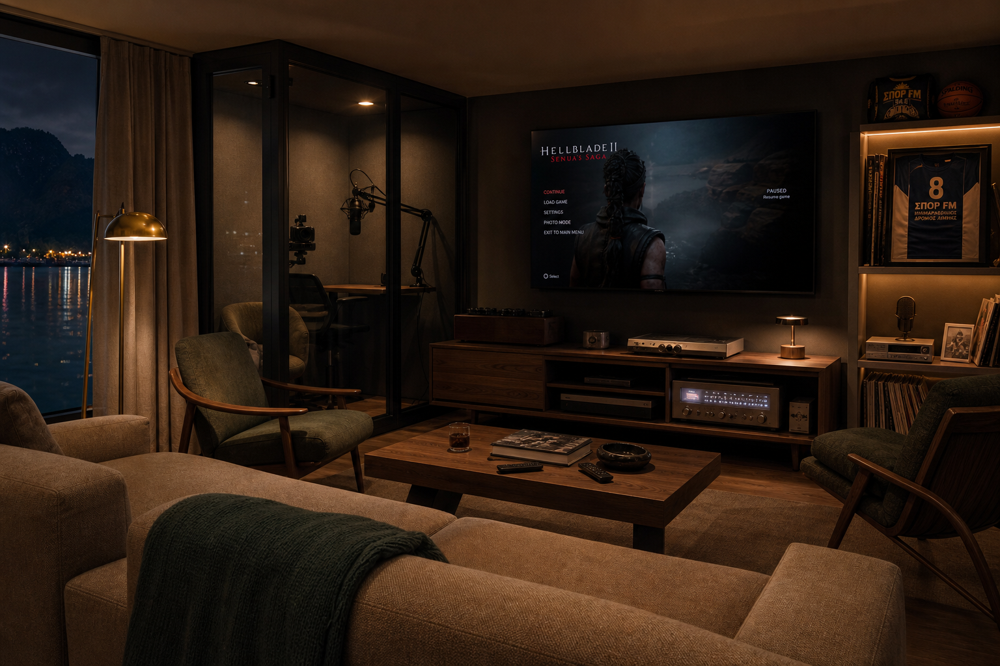
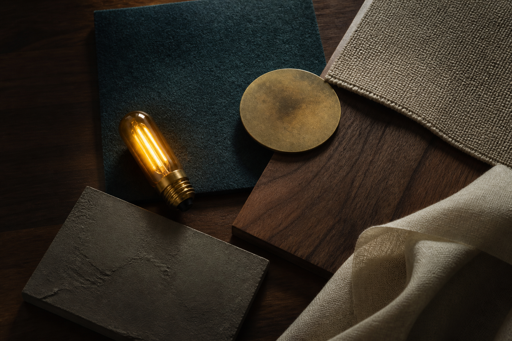

01 · Play wall
Two seats, one desk
A 3.2 m walnut run. Primary 49" ultrawide, guest 32" OLED. Chairs in dark wool. Task light at 3000K. No RGB keyboards. This is where ranked play and long co-op happen.
Night room · Athanasios Diakou 7
A gaming room that behaves like a studio: two focused seats, a sofa for the room, one glass booth for a live drop-in. Lake-dark, walnut, and a single amber on-air light.
The idea
Kastoria already lives with 91.5 all day. This room is the after-hours version of that habit: a 5.6 × 4.4 m chamber next to the station, built for play, watching, and the occasional on-air moment — not for RGB, energy drinks, or a wall of trophies.
The look is a listening bar crossed with a radio booth. Acoustic felt instead of LED strips. Bias light locked to warm amber. A lake window with linen, so the night outside stays in the room.


Plan
24.6 m². No wasted corners. Cables vanish into millwork. The sofa never sits behind a player’s back — it faces the same wall as the monitors, so the room watches together.
A 3.2 m walnut run. Primary 49" ultrawide, guest 32" OLED. Chairs in dark wool. Task light at 3000K. No RGB keyboards. This is where ranked play and long co-op happen.
Low oatmeal sofa, 65" wall screen, brass floor lamp. Friends sit here without hovering over shoulders. Sports nights can take the same screen — the station already speaks that language.
1.6 × 1.4 m acoustic booth with a boom mic and a single warm key light. A guest can talk to the show, stream a match, or record a drop without killing the room’s sound.
A short walnut bar by the door: fridge, glasses, coffee. Coats go in a closed cupboard. The first thing you see is the lake window, not storage.
Palette and materials
The amber is the on-air lamp and the monitor bias — nothing else. Color comes from walnut, wool, teal felt, and the lake at night.

Fit-out
How the night runs